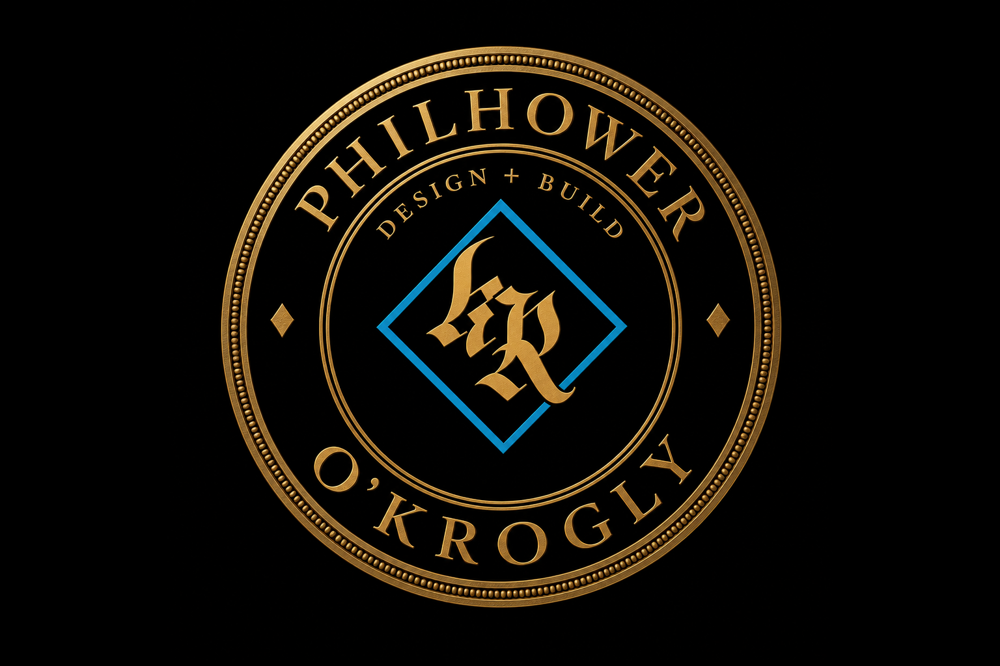
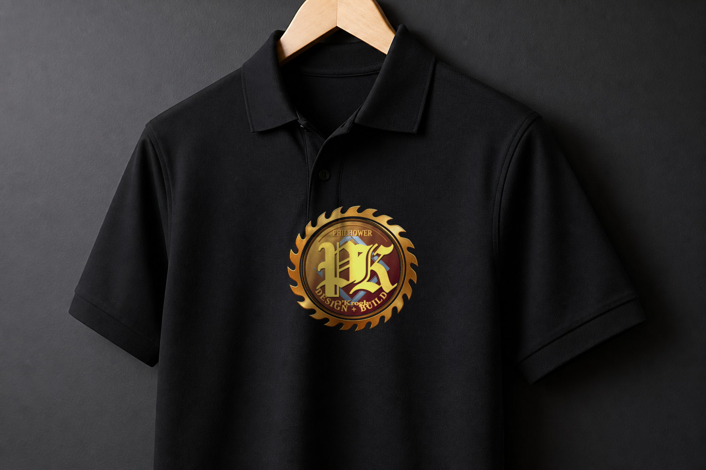
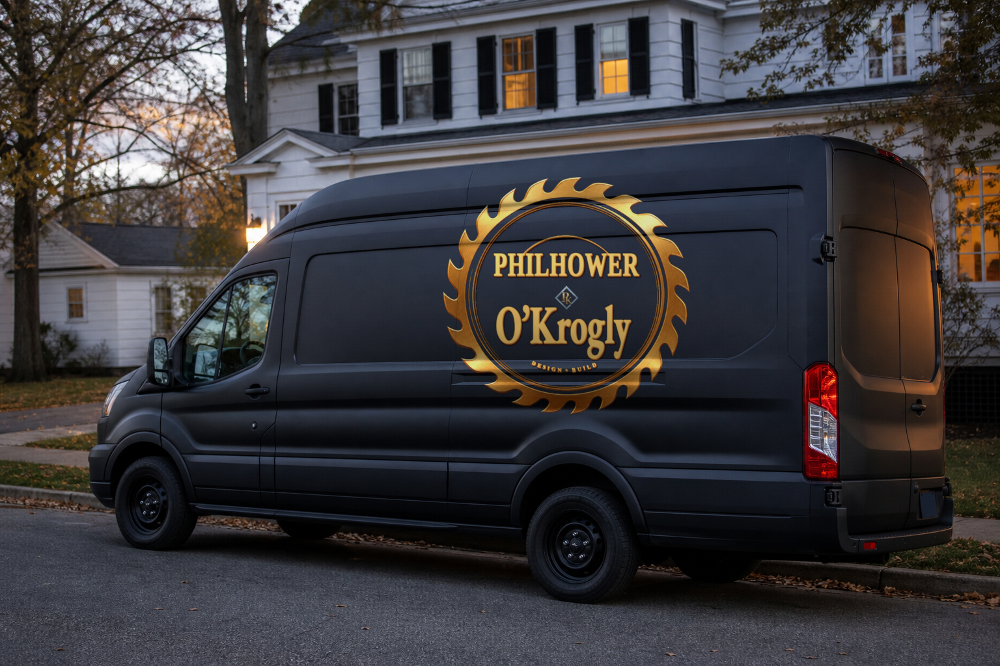
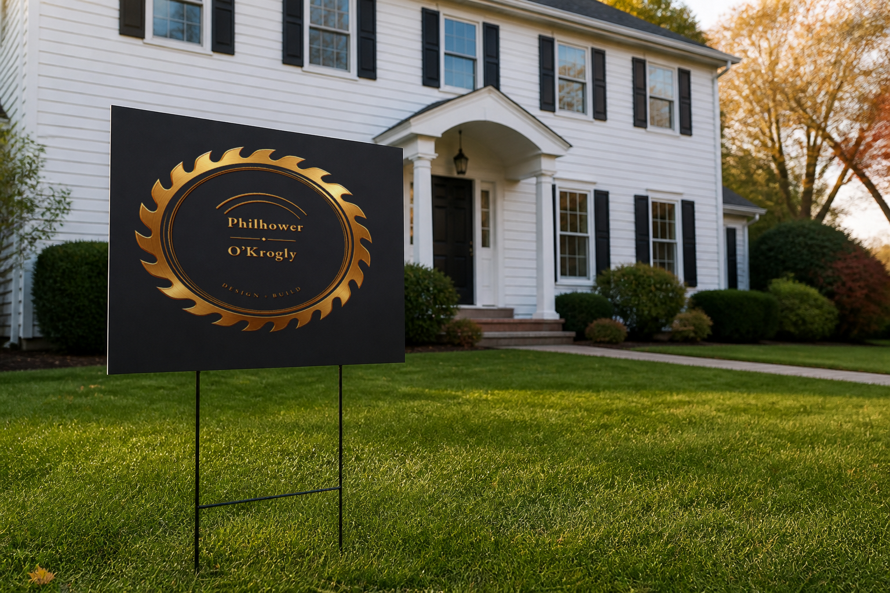
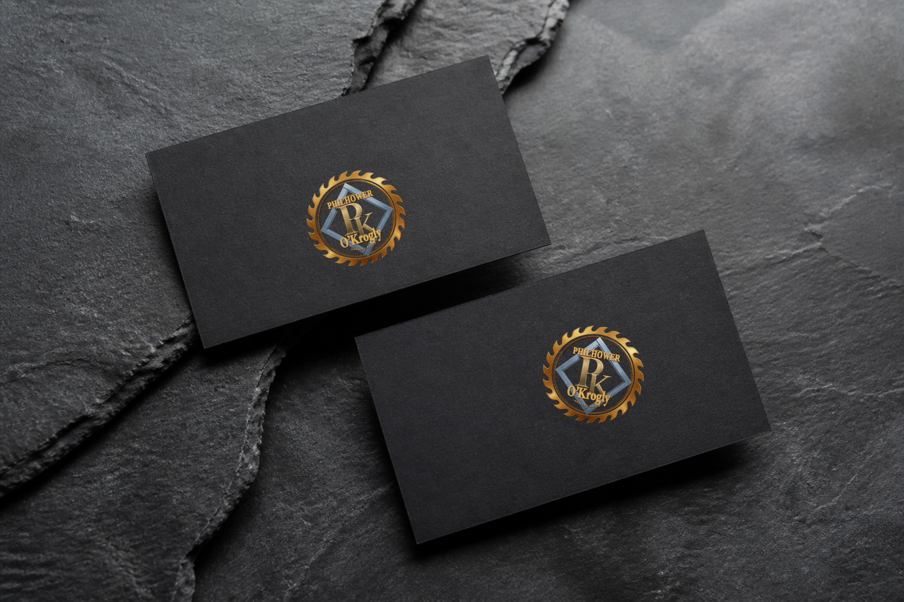
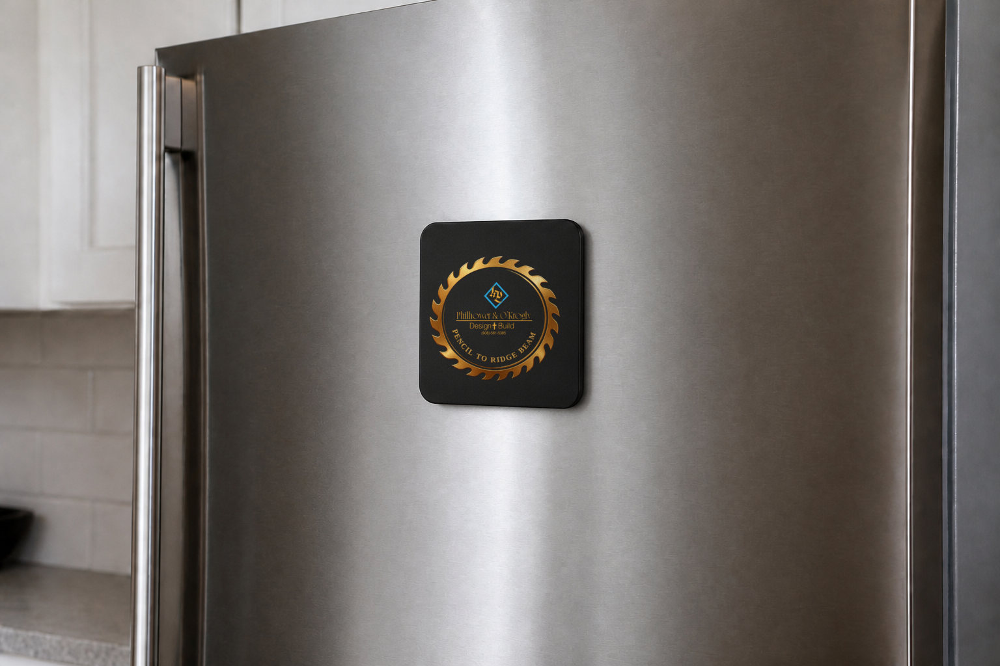

Same Hills blade. Balanced lockup: PK overlapping the carpenter-square on a gold–burgundy field. PHILHOWER and O’Krogly in the diamond points. DESIGN + BUILD on the bottom arc.
One lockup. Polo, van, yard, card, fridge. Black outside the blade.

Identity
Design + Build

Same Hills blade. Balanced lockup: PK overlapping the carpenter-square on a gold–burgundy field. PHILHOWER and O’Krogly in the diamond points. DESIGN + BUILD on the bottom arc.
One lockup. Polo, van, yard, card, fridge. Black outside the blade.
Work research
There is not a different logo for every shop. Across directories, union halls, mill stamps, and truck doors, New Jersey carpenter marks fall into four families. This lockup does not join the first three.
Drawn 1864, adopted 1884. Jack plane, compass, rule, shield. Pale blue for ideas as high as the sky. Dark red for honorable labor. Labor Omnia Vincit. NJ locals — 251, 253, 254, 255, 455, 715, the Eastern Atlantic States council — wear this same emblem. It is a brotherhood mark, not a shop mark. We do not draw it.
Independent builders: last name in script, a roof silhouette, navy or red, Est. 19xx. Morris County custom-home sites still look like this. It reads as a family company. It does not read as a seal.
Condensed caps, gold leaf or vinyl, hammer or nail, phone as large as the name. Bergen, Passaic, Morris — the lettering shops have been painting this for decades. Legible at a light. Easy to copy. Already everywhere.
Newark stamped tools, not badges: Richardson Brothers saws (1859), Wheatcroft planes, millwork ads that list sash, doors, and trim in gothic. The circular saw as the whole company seal is rare. Service The Hills lives here. So does this lockup.
The trail: keep the Hills blade. The diamond is a carpenter’s square — the rule from the trade, not the union shield. PK sits in that square. Do not add a house, a hammer, or a plane. Those marks are taken.
Print system
Same Hills blade hierarchy on the shirt, the van, the lawn, the card, and the fridge. The PK seal stands alone when you need a stamp.






Advertising sound
Anthem for the carpenter and the designer — one crew, one lockup, northern New Jersey. Cut it as a work song, a 30-second radio spot, or an eight-second sting on the van Bluetooth.
Chorus — the part that has to stick
Philhower & O’Krogly
Design + Build
From the pencil to the ridge beam
We draw it, then we build
Verse 1 — the designer
Lay the rooms out honest
Give the daylight a path
No catalog kitchen
No house off a screen
Verse 2 — the carpenter
Chalk line on the subfloor
Ridge beam in the sun
A porch that takes the weather
A joint that doesn’t run
Bridge
Not two companies shaking hands on Friday.
One crew. One mark. The number on the shirt.
Tag
Philhower & O’Krogly · Pencil to ridge beam · (908)-581-5385
You can hire a drawing and hope the carpenter shows. You can hire a hammer and hope the rooms make sense. Or you call the crew that does both.
Philhower & O’Krogly — Design + Build. From the pencil to the ridge beam. Northern New Jersey. (908)-581-5385.
Design + Build. Pencil on the table. Hammer on the hill. Philhower & O’Krogly. (908)-581-5385 — the number on the shirt.
Baritone, dry, no Auto-Tune. Acoustic guitar and a floor tom at about 96 BPM. Sawdust in the room, not a choir. Gold on black — same as the polo.
Every business is a different problem, so the system is built for that business — not one layout reused from the last shop.
Start a project